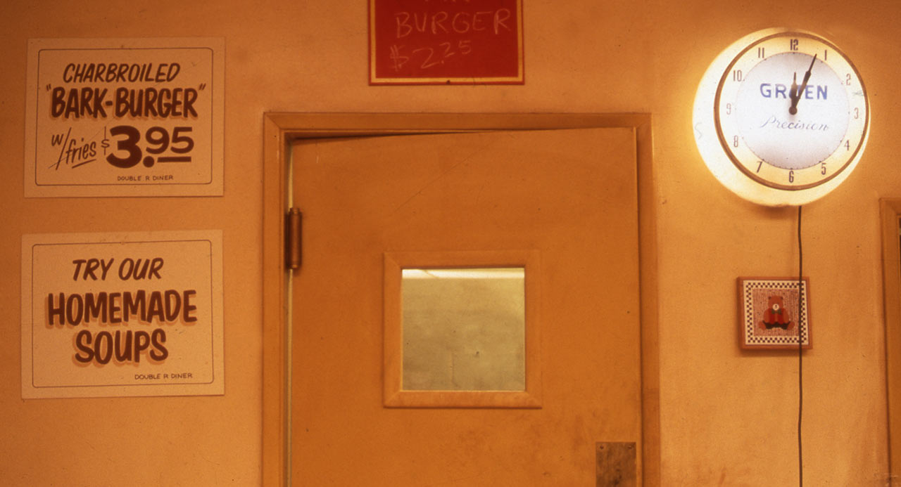

1990–1991
Temporada 2
Las consecuencias de la investigación expanden el mapa.
Ficción, realidad
22 episodios. Emitida entre septiembre de 1990 y junio de 1991 en ABC.
Con los primeros 8 episodios resolviendo el asesinato de Laura, los 14 restantes pasan a explorar las ramificaciones: nuevos personajes, conflictos heredados, lo sobrenatural cobrando una presencia más palpable.
| Año | 1990–1991 |
|---|---|
| Episodios | 22 |
| Duración aproximada | 45 min por episodio |
| Centro narrativo | Lo que permanece oculto |
| Tono | Misterio, romance, amenaza |
Los 22 episodios
- Episodio 9
Que el gigante esté contigo
Herido y al borde de la muerte, Cooper recibe la visita de un misterioso gigante con pistas para el caso.
- Episodio 10
Coma
Mientras Cooper se recupera, Audrey se adentra más en la doble vida secreta de Laura.
- Episodio 11
El hombre detrás del cristal
Aparece el diario de Laura y Audrey queda atrapada como rehén en una negociación peligrosa.
- Episodio 12
El diario secreto de Laura
Leland confiesa un crimen distinto mientras Audrey es retenida para pedir un rescate.
- Episodio 13
La maldición de la orquídea
Una redada y un plan para recuperar el diario de Laura ponen a varios personajes en riesgo.
- Episodio 14
Demonios
Un rescate, una fiesta incómoda y una despedida marcan un capítulo cargado de tensión.
- Episodio 15
Almas solitarias
Un suicidio revela pistas clave y el pueblo pierde a otro de sus habitantes en una noche que cambia todo.
- Episodio 16
Conducir con un cadáver
Un macabro paseo con un cuerpo en el auto acompaña el arresto de un sospechoso inesperado.
- Episodio 17
La mediación
Cooper reúne a todos los sospechosos y finalmente llega a la verdad detrás de la muerte de Laura.
- Episodio 18
Disputa entre hermanos
Con el caso cerrado, nuevas amenazas (drogas, chantajes, apariciones extrañas) empiezan a rodear a Cooper.
- Episodio 19
Baile de máscaras
Una nueva agente del FBI llega al pueblo mientras viejos y nuevos romances se entrelazan.
- Episodio 20
La viuda negra
Cooper descubre que está siendo incriminado, mientras Ben Horne empieza a perder la cabeza.
- Episodio 21
Jaque mate
Un enemigo del pasado de Cooper empieza a mover sus piezas en un juego mortal de ajedrez.
- Episodio 22
Doble juego
Alianzas y traiciones se multiplican mientras la sombra de Windom Earle se hace más presente.
- Episodio 23
Amas y esclavos
El juego de ajedrez con Earle se vuelve más peligroso mientras varias relaciones se rompen.
- Episodio 24
La condenada
Earle empieza a acechar directamente a las mujeres cercanas a Cooper.
- Episodio 25
Heridas y cicatrices
Un nuevo amor le da un respiro a Cooper mientras el pueblo se prepara para un certamen.
- Episodio 26
En las alas del amor
Nuevos romances y un descubrimiento inesperado sacuden al pueblo antes de la tormenta final.
- Episodio 27
Cambio en las relaciones
Un misterioso jeroglífico y un romance floreciente conviven con el próximo movimiento de Earle.
- Episodio 28
El camino de la Logia Negra
Earle secuestra a un personaje clave mientras Cooper recibe un mensaje del más allá.
- Episodio 29
Miss Twin Peaks
El certamen de belleza del pueblo se convierte en el escenario de un giro aterrador.
- Episodio 30
Más allá de la vida y la muerte
El final de temporada lleva a Cooper a la Logia Negra, donde debe enfrentar sus propios miedos.